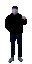

- AI research
- Agentic AI
- Adversarial ML
- Software development
- LED & fire shows
- Hands-on maker
- Prague
About
Hi, I'm Ondřej.
I'm doing a Master's in artificial intelligence at Charles University in Prague and working as a student researcher at the Institute of Computer Science of the Czech Academy of Sciences. My bachelor's thesis was about adversarial examples: tiny, invisible changes to an image that completely fool a neural network. Lately I'm also into agentic AI.
Since 2018 I've also been building software and hardware for LED and fire shows at Pyroterra / Lighttoys and travelling with the crew as a show technician. These days it's more occasional, but I still jump in.
When I'm not at a keyboard, I'm usually making something with my hands, riding a bike, hiking or snowboarding.
-
2026 – now
Student researcher
Institute of Computer Science, Czech Academy of Sciences (ÚI AV ČR)
-
2026 – now
Mgr. Artificial Intelligence
Faculty of Mathematics and Physics, Charles University
-
2024 – now
Prg.ai Minor
AI programme of Charles University & Czech Technical University
-
2021 – 2026
Bc. Artificial Intelligence
Faculty of Mathematics and Physics, Charles University. Thesis: adversarial examples for deep neural networks
-
2018 – now
Pyroterra / Lighttoys
Occasionally now. Show manager and technician, designer and developer of custom LED and fire equipment
-
2016 – 2018
Freelance web developer
E-shops with custom features
- Python, PyTorch, TensorFlow, scikit-learn, C#
- Czech, English, some German
Contact
Find me here
- GitHub ondrejneruda
- itch.io N3r000
- ČSFD N3r000
Adversarial ML